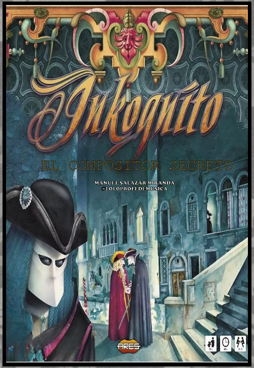
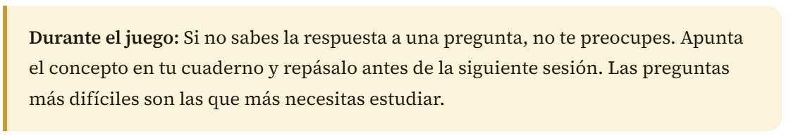

Actividad 7.1. Reglas del juego
- Duración
- 10 minutos
- Agrupamiento
- Grupos de 16 personas máximo
En primer lugar vamos a dedicar 10 minutos a leer las instrucciones del juego, las normas y conocer la mecánica y elementos del mismo. Es importante que todo el mundo tenga una idea clara antes de comenzar la partida.

Actividad 7.2. Partida de "Inkognito"
- Duración
- 35 minutos
- Agrupamiento
- Grupo máximo 16 participantes
Juega con tu grupo a esta adaptación del juego Inkognito realizada por el profesor de música Manuel Salazar Miranda (@loloprofemusica). El objetivo no es solo ganar: es consolidar los conocimientos que necesitarás para el Pecha Kucha, el podcast y la infografía.
INKOGNITO - EL COMPOSITOR SECRETO
En el corazón de la opulenta Venecia del siglo XVII, donde los canales susurran secretos y las máscaras ocultan más de lo que revelan, se esconde un misterio que ha desafiado a los más astutos: la identidad de un enigmático compositor barroco, cuya música posee la capacidad de hechizar a quien la escuche.
Cuenta la leyenda que este compositor, conocido solo por sus iniciales, dejó un rastro de pistas a lo largo y ancho de Venecia. Desde las opulentas salas del Palacio Ducal hasta las recónditas callejuelas donde el tiempo parece haberse detenido, cada enigma resuelto acerca un paso más a la revelación de su verdadera identidad.
Vuestro objetivo es desentrañar este misterio antes de que los otros equipos lo hagan. Pero no será fácil. En el camino, tendréis que enfrentaros a desafíos que pondrán a prueba vuestro conocimiento sobre
la música del Barroco, vuestra habilidad para trabajar en equipo y vuestra capacidad para descifrar las pistas escondidas en cada rincón de esta ciudad llena de maravillas y peligros.
A medida que avancéis, descubriréis no solo la identidad del compositor, sino también los fascinantes aspectos de la vida musical en el Barroco. Desde el auge de la ópera hasta los intricados conciertos de Vivaldi, cada pista os llevará más cerca del secreto final.
Pero cuidado, porque otros equipos también están tras la pista, y solo uno podrá desvelar la verdad. Cada movimiento en el tablero es crucial, cada respuesta, vital. Venecia os desafía a un duelo de ingenio y conocimiento.
¿Podréis vosotros, en medio del laberinto de canales y palacios, ser los primeros en desvelar el enigma del compositor secreto? La música y la historia os esperan. Que comience la aventura.
Enlace a la página web del juego adaptado y sus materiales

Actividad 7.3. Reflexión post-juego (Ticket de salida)
- Duración
- 5 minutos
- Agrupamiento
- Individual
En gran grupo: ¿qué preguntas han sido más difíciles? ¿Qué crees que tienes que repasar antes de la elaboración de los productos finales?